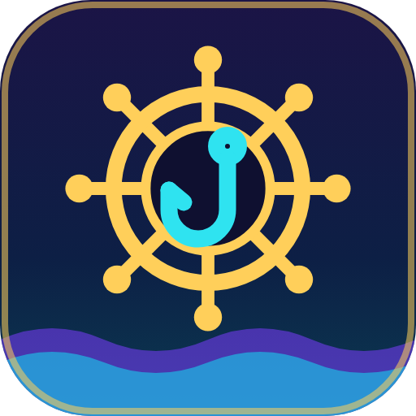

TimoneiroPrivacidade — Timoneiro
Atualizado em 12/11/2026 (versão 2.0).
- Onde roda: só no seu navegador, nas páginas
https://www.twitch.tv/ehttps://twish.com.br/e no fundo da extensão. O fundo lê o Twish a cada 30 s, só com GET. - O que lê no Twish: as respostas das APIs do site (conta, inventário, loja, títulos, eventos, manual, torneio, expedições, Mercado e perfis públicos de jogadores), sempre com GET e com a sua sessão do site. Também lê a lista pública de barcos (
/api/channels), sem sessão, para saber em quais lives aparecer. - O que lê na Twitch: o endereço da live, para saber o canal; os nomes visíveis no chat, para o seletor de duelo; e o campo de mensagem, para escrever o comando.
- Tempo real: na aba do Twish, a extensão abre a mesma conexão de avisos que o site usa (WebSocket em
twish.com.br), com a sua sessão, só para ouvir. Nada é enviado por essa conexão. - Versão nova: uma vez por dia, o fundo baixa o arquivo público
https://ped0071.github.io/timoneiro-releases/latest.json, sem cookies e sem nenhum dado seu, para avisar se saiu versão nova. A assinatura digital desse arquivo é conferida antes de qualquer aviso. - O que guarda: as respostas e as suas preferências ficam no armazenamento da extensão, no seu computador. A página da Twitch não tem acesso a ele. Nada vai para o desenvolvedor nem para terceiros, exceto o que você ligar no Discord (abaixo).
- Sync do navegador: se o sync do navegador estiver ligado, alguns ajustes vão para a sua conta do navegador, para valer nos seus outros computadores: notificações, barco fixado, canais escondidos e "só nestes canais", nick e alertas do Mercado. O webhook do Discord e os dados da conta do Twish não vão.
- O que envia no chat: nada por conta própria. Os comandos são escritos no chat e você aperta Enter. A única exceção é o Arremesso automático (opcional, desligado por padrão): ligado, um clique no 🎣 da barra envia um
$pescar. - Discord (opcional): só depois que você colar um webhook em Opções e permitir o acesso ao Discord, quando o navegador pedir. Os avisos que você escolher (pesca, eventos, torneio, frota, salas, Mercado) vão para esse webhook, com o título e o texto da notificação. A URL do webhook fica só no armazenamento da extensão e não vai no backup nem no sync.
- Backup e exportações: os botões de exportar baixam um arquivo JSON para o seu computador, sem senha, tokens nem o webhook do Discord.
- Senhas e cookies: a extensão não pede senha e não lê cookies. O navegador envia a sua sessão do Twish normalmente nas leituras.
- Remover: desinstalar a extensão apaga o armazenamento dela.